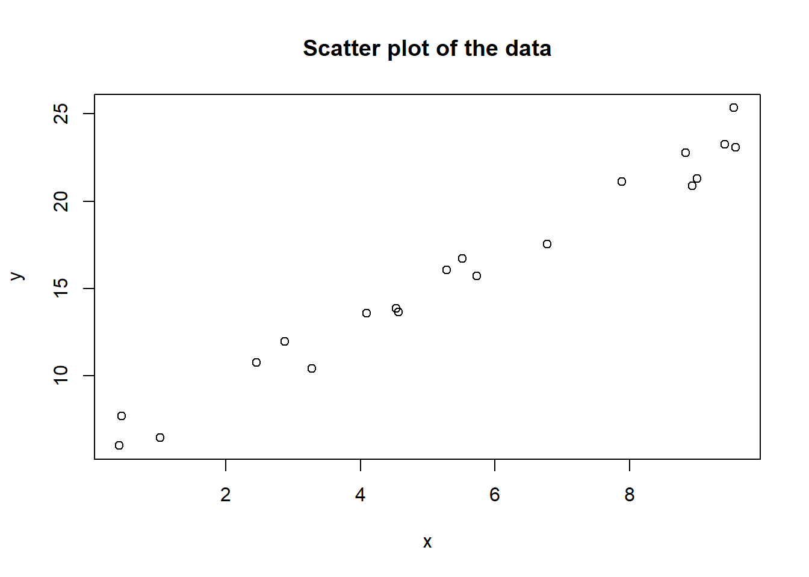
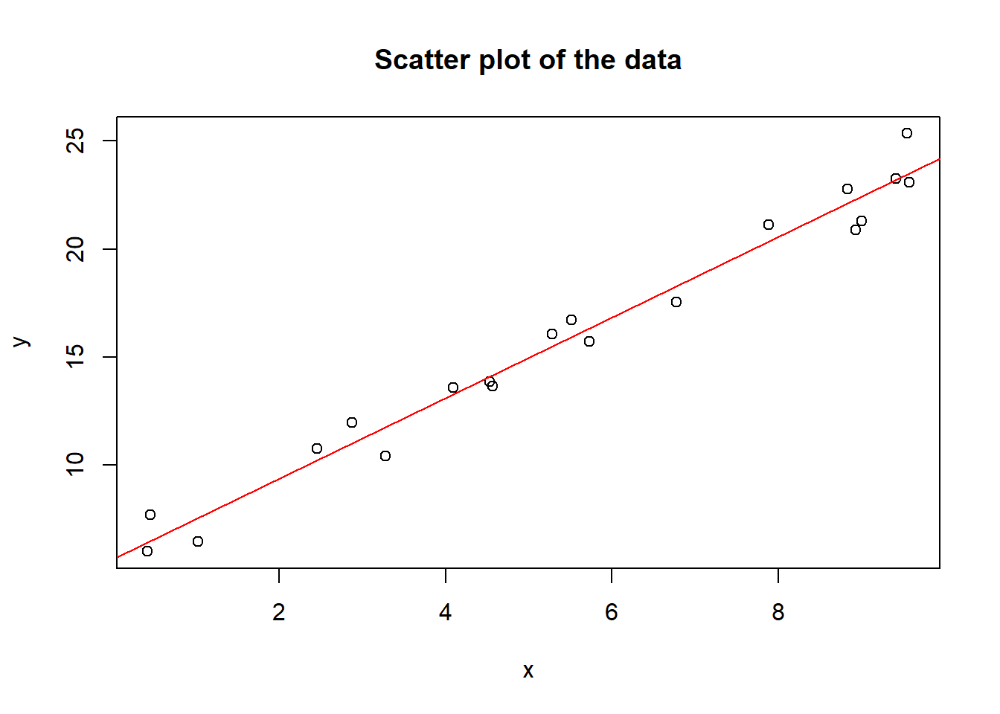
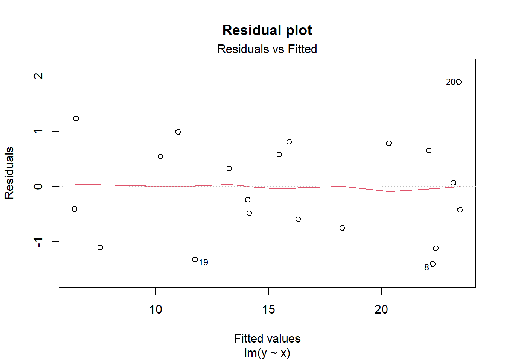
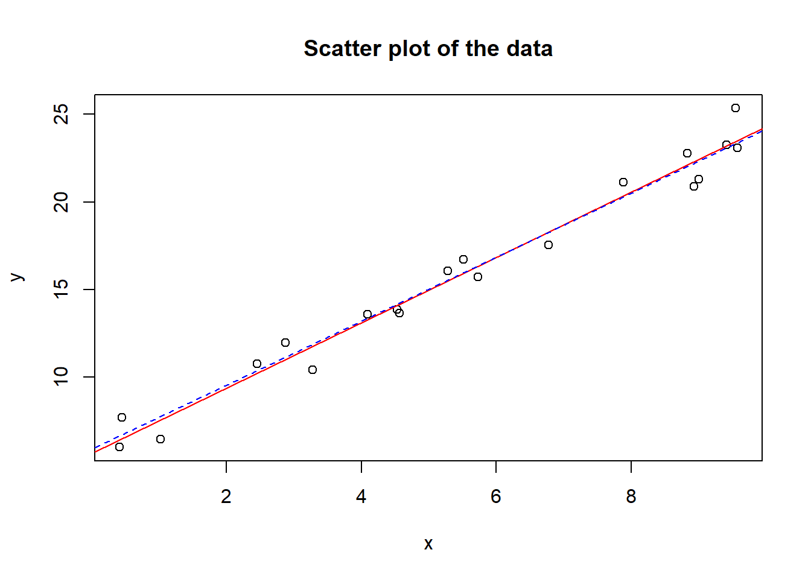
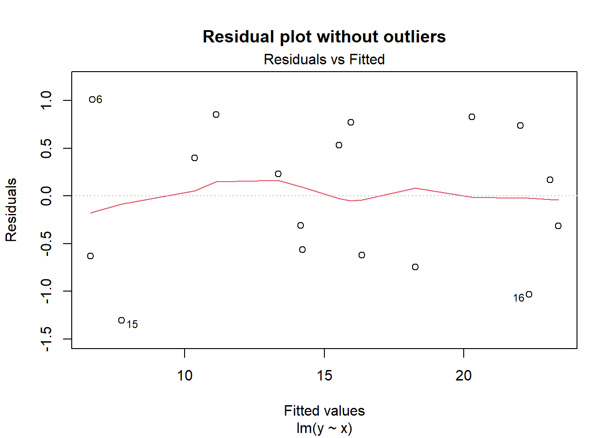

# First, let's create some fictitious data to illustrate the concept of simple linear regression.
# Suppose we have an independent variable x and a dependent variable y.
# Generate 20 random values for x between 0 and 10.
set.seed(123) # to ensure reproducibility of results
x <- runif(20, 0, 10)
# Generate 20 values for y using a linear function with a slope of 2 and an intercept of 5, plus some random noise.
y <- 2 * x + 5 + rnorm(20, 0, 1)
# Now, let's plot the data on a scatter plot.
plot(x, y, main = "Scatter plot of the data", xlab = "x", ylab = "y")
We can observe a positive linear trend in the data, y increases as x increases.
# Let's try fitting a straight line to the data using the lm function (linear model).
# The formula is y ~ x, meaning that y is explained by x.
model <- lm(y ~ x)
# View the results of the model using the summary function.
summary(model)##
## Call:
## lm(formula = y ~ x)
##
## Residuals:
## Min 1Q Median 3Q Max
## -1.40947 -0.63201 -0.08684 0.68662 1.89260
##
## Coefficients:
## Estimate Std. Error t value Pr(>|t|)
## (Intercept) 5.61628 0.43830 12.81 1.74e-10 ***
## x 1.86851 0.06959 26.85 5.66e-16 ***
## ---
## Signif. codes: 0 '***' 0.001 '**' 0.01 '*' 0.05 '.' 0.1 ' ' 1
##
## Residual standard error: 0.9508 on 18 degrees of freedom
## Multiple R-squared: 0.9756, Adjusted R-squared: 0.9743
## F-statistic: 721 on 1 and 18 DF, p-value: 5.657e-16The output provides various information about the model, such as:
-Call: the lm function call used to fit the model.
-Residuals: the model residuals, which are the differences between observed y values and model-predicted values.
-Coefficients: the model coefficients, including the intercept and slope of the linear line.
-Multiple R-squared: the coefficient of determination, indicating the proportion of y variance explained by the model.
-Adjusted R-squared: a version adjusted for the number of variables and observations in the model.
-F-statistic: a statistic used to test the null hypothesis that all coefficients are zero.
-p-value: the probability of obtaining an F-statistic as extreme or more extreme if the null hypothesis were true
# Extract coefficients
intercept <- coef(model)[1]
slope <- coef(model)[2]
plot(x, y, main = "Scatter plot of the data", xlab = "x", ylab = "y")
# Add the regression line to the scatter plot using the lines function.
abline(model, col = "red")
We can see that the straight line fits well to the data, but there are some points that are further from the line than others.
# Visualize the residuals using the plot function with the resid argument.
plot(model, which = 1, main = "Residual plot")
# Identify the outliers using the identify function, allowing us to click on points and see their indices.
identify(x, y)
## integer(0)The output shows a plot of residuals against fitted values.
There are some points that deviate more from the horizontal line than others.
These points are outliers, points that do not follow the general data pattern.
We can see that the indices of the outliers are 8, 19 and 20.
# Remove the outliers from the model using negative indexing.
model_without_outliers <- lm(y ~ x, data = data.frame(x, y)[-c(8, 19, 20), ])
# View the results of the new model using the summary function.
summary(model_without_outliers)##
## Call:
## lm(formula = y ~ x, data = data.frame(x, y)[-c(8, 19, 20), ])
##
## Residuals:
## Min 1Q Median 3Q Max
## -1.3066 -0.6226 0.1675 0.7376 1.0091
##
## Coefficients:
## Estimate Std. Error t value Pr(>|t|)
## (Intercept) 5.85425 0.37068 15.79 9.36e-11 ***
## x 1.83226 0.06178 29.66 9.85e-15 ***
## ---
## Signif. codes: 0 '***' 0.001 '**' 0.01 '*' 0.05 '.' 0.1 ' ' 1
##
## Residual standard error: 0.7621 on 15 degrees of freedom
## Multiple R-squared: 0.9832, Adjusted R-squared: 0.9821
## F-statistic: 879.6 on 1 and 15 DF, p-value: 9.851e-15The output shows that the coefficients of the new model are slightly different from the original model.
R-squared and adjusted R-squared have increased, indicating a better fit without outliers.
The F-statistic and p-value have also increased, indicating a stronger linear relationship between x and y without outliers.
model_without_outliers <- lm(y ~ x, data = data.frame(x, y)[-c(8, 19, 20), ])
plot(x, y, main = "Scatter plot of the data", xlab = "x", ylab = "y")
abline(model, col = "red")
# Add the new fitted line to the scatter plot using the abline function with the lty argument.
abline(model_without_outliers, col = "blue", lty = 2)
We can see that the new line is closer to the points than the original line, except for the outliers.
# Visualize the residuals of the new model using the plot function with the resid argument.
plot(model_without_outliers, which = 1, main = "Residual plot without outliers")
The output shows that the residuals of the new model have a more normal distribution and constant variance than the residuals of the original model.
There are no more outliers, as they have been removed from the model.